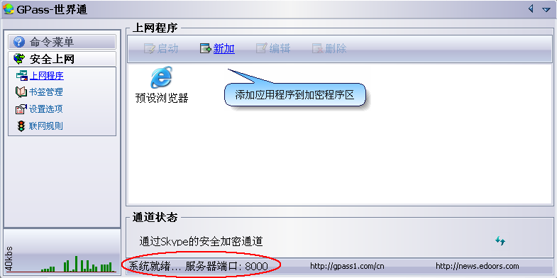
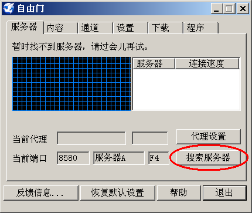
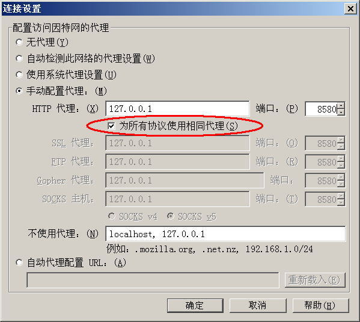

大概是临近国庆的缘故，GFW 又加大了封锁力度。最近几天，很多网友纷纷发邮件给俺，反映翻墙的困难。今天就来写个帖子，把一些网友经常问的问题，汇总在一起并逐一解答。
翻墙作为天朝人民喜闻乐见的一项全民运动，有其特殊性。当使用不同的翻墙工具、不同的网络接入（ISP）、甚至不同的操作系统，都可能导致不同的翻墙效果。而俺本人的见识、时间、精力都有限，无法尝试各种组合方式。因此，就需要广大网友给俺反馈，以便更好地传播翻墙姿势。
如果你是一位翻墙的新手，建议先看一下俺写的翻墙扫盲教程——《如何翻墙》。
为了提高网友的阅读效率，把最常见、最关心的几个问题，放在开头。其它问题分类放置。
如果你想搞到 世界通，后面会给出网易（墙内）的下载链接，不用翻墙就可下载。
如果你要获取其它的翻墙工具，可以参见俺写的帖子《获取翻墙软件方法大全》，里面提供了各种方法。（此文章在墙外，不会翻墙的同学，请用【RSS 阅读器】订阅俺的博客即可看到。俺博客订阅地址：http://feeds2.feedburner.com/programthink）
据俺近期的观察，截至2012年2月，无.界 11.03 还可用。具体介绍请看俺12月12日的帖子《新版本无界——赛风3失效后的另一选择》。
好消息是 自由门 又复活了（最新版 7.2.5）。貌似速度比 无界 还快，值得一试。
从2月10日开始，部分网友反馈 赛风3（version 26）再次失效。如果你手头的赛风3不灵，请改用 自由门 或 无界。
除了使用加密代理工具翻墙，还可以使用 VPN 翻墙。目前，有些小众的 VPN 还能用。没有使用过 VPN 的同学，请看俺9月底写的《扫盲VPN翻墙——以Hotspot Shield为例》。虽然 Hotspot Shield 已经失效，但是那篇文章介绍的 VPN 知识，对你应该有用。
强烈建议：手头多备几个翻墙工具，当其中一个失效，换另一个，以免被动。
赛风3 的获取比较简单。只需往它官网提供的邮箱 get@psiphon3.com 发送任意邮件，即可收到自动回复。回信中会提供赛风3的若干下载网址，还会在附件中提供赛风软件（邮件里的附件名叫psiphon3.asc，把文件名改为psiphon3.exe即可直接运行）。
关于此问题，俺已经专门写了一个帖子《双管齐下的赛风3》。这里就不再浪费口水了。（此文章在墙外，不会翻墙的同学，请用【RSS 阅读器】订阅俺的博客即可看到。俺博客订阅地址：http://feeds2.feedburner.com/programthink）
为了照顾不会翻墙的网友，俺特地提供了墙内可用的下载（在“这里”）。下载后是一个BMP图片，但其实是一个压缩包。图片下载到本地后，把文件扩展名从 bmp 改为 7z，就可以用 7zip 或者 WinRAR 打开，然后把 无.界 解压缩出来。
关于此问题，俺已经专门写了一个帖子《新版本无界——赛风3失效后的另一选择》。这里就不再浪费口水了。（此文章在墙外，不会翻墙的同学，请用【RSS 阅读器】订阅俺的博客即可看到。博客订阅地址：http://feeds2.feedburner.com/programthink）
为了照顾不会翻墙的网友，俺特地提供了墙内的下载（在“这里”）。下载后是一个BMP图片，但其实是一个压缩包。图片下载到本地后，把文件扩展名从 bmp 改为 7z，就可以用 7zip 或者 WinRAR 打开，然后把 无.界 解压缩出来。
关于此问题，俺已经专门写了一个帖子《基于 Skype 翻墙》。这里就不再浪费口水了。（此文章在墙外，不会翻墙的同学，请用【RSS 阅读器】订阅俺的博客即可看到。俺博客订阅地址：http://feeds2.feedburner.com/programthink）
如果 世界通 建立网络连接，会在界面上显示“系统就绪”（如下图），并且系统托盘的图标会变为彩色的。

如果你运行 世界通 之后，始终连不上，可以采取如下3个步骤来搞定。
步骤1
点左边“上网程序”标签，切换到“上网程序”界面，然后点界面右下角的按钮（如下图），重建网络连接。运气好的话，1-2分钟内，世界通 就能够通过 Skype 重新建立可用的翻墙通道。

步骤2
如果步骤1不灵光，把 Skype 和 世界通 关闭后重新启动。
步骤3
万一还不行，就用最后一招——删除 Skype 的配置文件。由于 Skype 使用 P2P 方式联网，它会把自己需要连接的若干服务器保存在某个配置文件中。你需要先关闭 Skype，然后删除该配置文件，然后重新启动 Skype，它就会重新寻找可用的服务器。
Skype 的配置文件在如下位置。直接在资源管理的地址栏输入目录名，就可看到该文件。
目录名：%APPDATA%\Skype\
文件名：shared.xml
处理方法跟前一个问题一样。
如果你查看 世界通 的数字签名，显示“证书已被颁发者吊销”，不要惊慌。在这种情况下，可以通过验证散列值（哈希值）来判断 世界通 的 exe 文件（gpass.exe）是否被篡改过。
具体的散列值如下：
如果你手头的 exe 文件，计算出来的散列值和上述一致，就可以放心大胆地用。
某些国产的杀毒软件确实会对 世界通 误报（不排除是党国授意的）。如果你不放心，可以校验一下 世界通 的散列值（具体参见前一个问题）。如果散列值跟俺给出的一样，就说明无毒。
经若干网友反馈，在 Vista 和 Win7 下运行 世.界.通，某些情况下会碰到兼容性问题（具体原因未知，知道的网友麻烦告诉俺）。至至于其它几种常见的 Windows 系统（Win2000、WinXP、Win2003）则没有兼容性问题。
碰到兼容性问题的网友，可以考虑改用 花园网络（跟 世界通 一样，也支持 Skype 通道）。
如果在不翻墙的情况下，直接访问 Skype 官方网站的下载页面，它会自动跳转到 TOM 网站的下载页面，这样一来，你下载的就【不是】国际版，而是 TOM 版。
要下载到正宗的国际版，有两个办法：
1、如果你能翻墙，在翻墙的方式下，访问 Skype 官方网站，就可以下载到国际版。
2、如果你不会翻墙，可以到国内知名的软件下载站点去找一找（Skype 的名气这么大，不难找到）。
运行 Skype 之后，在菜单里点“帮助”，再点“关于 Skype”，就会弹出“关于对话框”。如果在“关于对话框”里面出现“TOM”字样，那就是 TOM 版，否则就是国际版。
如果你还没有 Skype 帐号，要记得去 Skype 的官方网站（www.skype.com）注册，而不要去“TOM网”注册。
Skype 的官网需要翻墙访问，否则会被自动跳转到 TOM 网站。尚无翻墙能力的同学，可以先找一个 Web 代理。通过 Web 代理访问 Skype 的官网并注册帐号。
2011年下半年，自由门被封了很久。到了2012年2月，自由门 最新发布的版本是7.2.5，已经恢复正常。请升级到该版本。
关于此问题，俺已经专门写了一个帖子《自由菛——TOR 被封之后的另一个选择》。这里就不再浪费口水了。（此文章在墙外，不会翻墙的同学，请用【RSS 阅读器】订阅俺的博客即可看到。俺博客订阅地址：http://feeds2.feedburner.com/programthink）
当 自由门 掉线时，可以点上面“服务器”标签，切换到“服务器”界面，然后点“搜索服务器”按钮。如果运气好，自由门 会重新找到可用的服务器。

区别不大。大概专家版更适合老鸟，专业版更适合菜鸟吧 :-) 俺如果用 自由门，通常用专家版。
某些国产的杀毒软件确实会对 自由门 误报（不排除是党国授意的）。如果你不放心，可以校验一下 自由门 exe 文件的数字签名。如果数字签名正常，就表示没问题。
Hotspot Shield 目前最新版本是2.06，据俺观察从10月10日开始就失效了。在它的下一个版本发布之前，暂时不用指望它了。
如果你能翻墙，直接上官方网站（在“这里”），会下载到一个名叫“DM-XXX.exe”的东西，这货不是 HSS，而是 HSS 的下载器。拿到下载器之后，为了保险起见，可以先验证一下它的数字签名。验证无误，运行之。然后它会帮你下载到完整的 HSS 安装包（也带有数字签名）。
如果你无法翻墙，可以通过发送邮件的方式获取这个下载器。Windows 平台的网友，发任意邮件到 win@anchorfree.com ；使用苹果的网友，发任意邮件到 mac@anchorfree.com 。大约一柱香的功夫，你的邮箱就会收到下载器。邮箱收到的下载器，名为“DM-XXX.safe”，你只要把扩展名从 safe 改为 exe 就可以直接运行了。
HSS 有流量限制。貌似每个月有几 GB。如果纯粹浏览网页，不看视频不下载大文件，应该是够用的。
HSS 是根据 MAC 地址来统计流量的。万一你的流量超了，可以通过修改网卡的 MAC 地址来规避。（不懂得修改 MAC 地址的同学，先去 Google 一下）
经俺测试，运行了 HSS 之后，可以在 HTTP 协议下访问 Twitter，但是无法在 HTTPS 协议下访问。这就造成了 Twitter 无法登录。
解决方法是：安装老牌的代理工具 TOR。虽然 TOR 目前已经失效，但是在 HSS 已经建立虚拟局域网的情况下，TOR 是可以联通的。然后，设置你的浏览器，走 TOR 的代理（地址：127.0.0.1，端口：8118）。之后，就可以顺利访问推特了。
碰上此问题，可以查看一下系统服务（不懂得查看系统服务的，先去Google一下）。如果HSS正常安装，那系统中应该出现4个HSS相关的服务。比较重要的是如下这三个：
如果是“Hotspot Shield Service”没有运行，比较大的可能是：它依赖于“DHCP Client”服务，而“DHCP Client”服务被禁用。如果是这种情况，只需要把“DHCP Client”服务的启动方式改为自动并运行之，然后再次启动“Hotspot Shield Service”服务，即可。
如果是另外两个服务没有运行，可以尝试手动运行一下。如果手动运行也失败，可以来信跟俺交流。
最近1年多来，Tor 的很多网桥中继被 ＧFW 封杀，导致 Tor 的联网效果很不理想。建议改用其它的翻墙代理（如：世界通、自由门）。
此工具翻墙的原理比较新颖，今后如果能在国外的多个 ISP 大范围部署其服务端模块，ＧFW 几乎无法封锁（除了物理断网）。
但是，目前该工具还处于初级阶段，安全性、稳定性方面都还有待完善。而且，目前 telex 绑定的域名很少（新出的0.02版仅能绑定3个域名），ＧFW 会通过 DNS 污染使其失效。
没有关系。任何一款主流的浏览器都可以用来翻墙上网。
建议在浏览器中安装代理插件（比如：AutoProxy、FoxyProxy）。代理插件可以根据你要访问的网址，来决定是直接访问还是翻墙访问，非常方便。
建议使用 Firefox 或 Chrome，这两款浏览器支持的代理插件比较丰富。
碰到这种现象，可能性比较大的原因是：配置浏览器代理的时候，仅设置了 HTTP 协议的代理，没有设置 HTTPS 协议的代理。
以 Firefox 为例，需要在配置代理时，勾选“为所有协议使用相同代理”即可解决。

俺建议安装 Wine 软件（维基百科的介绍在“这里”，官方网站在“这里”）。该软件很牛逼，可以在 Mac OS 上运行 Windows 软件。
有了它，你就可以直接运行各种翻墙代理工具。
处理方法跟苹果的系统类似，请参见前一个问题的解答。
目前，党国官方并不承认“墙”的存在。因此，也就没有针对翻墙的法律。
如果你翻墙上网，仅仅是浏览网页，那完全没有必要担心。毕竟天朝内翻墙的人不计其数（至少上百万，没准上千万），警察叔叔是抓不过来滴。
如果你翻墙之后，在网上发表了对党国不利的言论（比如像俺这样），那就要小心了。在这种情况下，你一定要隐藏自己的身份信息，才不会被抓。那具体该如何隐藏捏？请看俺写的系列帖子《如何隐藏你的踪迹，避免跨省追捕》。（此系列文章在墙外，不会翻墙的同学，请用【RSS 阅读器】订阅俺的博客即可看到。俺博客订阅地址：http://feeds2.feedburner.com/programthink）
俺博客上，和本文相关的帖子（需翻墙）：
如何翻墙（传说中的扫盲教程，定期更新）
获取翻墙软件方法大全（教你在无法翻墙的情况下拿到翻墙软件）
TOR 已复活——meek 流量混淆插件的安装、优化、原理
关于 TOR 的常见问题解答
扫盲 VPN Gate——分布式的 VPN 服务器
双管齐下的赛风3
新版本无界——赛风3失效后的另一个选择
自由門——TOR 被封之后的另一个选择
扫盲 VPN 翻墙——以 Hotspot Shield 为例
简单扫盲 I2P 的使用
★前言
翻墙作为天朝人民喜闻乐见的一项全民运动，有其特殊性。当使用不同的翻墙工具、不同的网络接入（ISP）、甚至不同的操作系统，都可能导致不同的翻墙效果。而俺本人的见识、时间、精力都有限，无法尝试各种组合方式。因此，就需要广大网友给俺反馈，以便更好地传播翻墙姿势。
如果你是一位翻墙的新手，建议先看一下俺写的翻墙扫盲教程——《如何翻墙》。
★近期常见问题
为了提高网友的阅读效率，把最常见、最关心的几个问题，放在开头。其它问题分类放置。
◇如何获取翻墙工具？
如果你想搞到 世界通，后面会给出网易（墙内）的下载链接，不用翻墙就可下载。
如果你要获取其它的翻墙工具，可以参见俺写的帖子《获取翻墙软件方法大全》，里面提供了各种方法。（此文章在墙外，不会翻墙的同学，请用【RSS 阅读器】订阅俺的博客即可看到。俺博客订阅地址：http://feeds2.feedburner.com/programthink）
◇最近好多翻墙工具都失效，怎么办？
据俺近期的观察，截至2012年2月，无.界 11.03 还可用。具体介绍请看俺12月12日的帖子《新版本无界——赛风3失效后的另一选择》。
好消息是 自由门 又复活了（最新版 7.2.5）。貌似速度比 无界 还快，值得一试。
从2月10日开始，部分网友反馈 赛风3（version 26）再次失效。如果你手头的赛风3不灵，请改用 自由门 或 无界。
除了使用加密代理工具翻墙，还可以使用 VPN 翻墙。目前，有些小众的 VPN 还能用。没有使用过 VPN 的同学，请看俺9月底写的《扫盲VPN翻墙——以Hotspot Shield为例》。虽然 Hotspot Shield 已经失效，但是那篇文章介绍的 VPN 知识，对你应该有用。
强烈建议：手头多备几个翻墙工具，当其中一个失效，换另一个，以免被动。
★关于 赛风3 的问题
◇无法翻墙的情况下，如何获取？
赛风3 的获取比较简单。只需往它官网提供的邮箱 get@psiphon3.com 发送任意邮件，即可收到自动回复。回信中会提供赛风3的若干下载网址，还会在附件中提供赛风软件（邮件里的附件名叫psiphon3.asc，把文件名改为psiphon3.exe即可直接运行）。
◇赛风 如何使用？
关于此问题，俺已经专门写了一个帖子《双管齐下的赛风3》。这里就不再浪费口水了。（此文章在墙外，不会翻墙的同学，请用【RSS 阅读器】订阅俺的博客即可看到。俺博客订阅地址：http://feeds2.feedburner.com/programthink）
★关于 无界 的问题
◇无法翻墙的情况下，如何获取？
为了照顾不会翻墙的网友，俺特地提供了墙内可用的下载（在“这里”）。下载后是一个BMP图片，但其实是一个压缩包。图片下载到本地后，把文件扩展名从 bmp 改为 7z，就可以用 7zip 或者 WinRAR 打开，然后把 无.界 解压缩出来。
◇无界 如何使用？
关于此问题，俺已经专门写了一个帖子《新版本无界——赛风3失效后的另一选择》。这里就不再浪费口水了。（此文章在墙外，不会翻墙的同学，请用【RSS 阅读器】订阅俺的博客即可看到。博客订阅地址：http://feeds2.feedburner.com/programthink）
★关于 世界通 的问题
◇无法翻墙的情况下，如何获得 世.界.通？
为了照顾不会翻墙的网友，俺特地提供了墙内的下载（在“这里”）。下载后是一个BMP图片，但其实是一个压缩包。图片下载到本地后，把文件扩展名从 bmp 改为 7z，就可以用 7zip 或者 WinRAR 打开，然后把 无.界 解压缩出来。
◇世界通 如何使用？
关于此问题，俺已经专门写了一个帖子《基于 Skype 翻墙》。这里就不再浪费口水了。（此文章在墙外，不会翻墙的同学，请用【RSS 阅读器】订阅俺的博客即可看到。俺博客订阅地址：http://feeds2.feedburner.com/programthink）
◇世界通 连不上，怎么办？
如果 世界通 建立网络连接，会在界面上显示“系统就绪”（如下图），并且系统托盘的图标会变为彩色的。
如果你运行 世界通 之后，始终连不上，可以采取如下3个步骤来搞定。
步骤1
点左边“上网程序”标签，切换到“上网程序”界面，然后点界面右下角的按钮（如下图），重建网络连接。运气好的话，1-2分钟内，世界通 就能够通过 Skype 重新建立可用的翻墙通道。
步骤2
如果步骤1不灵光，把 Skype 和 世界通 关闭后重新启动。
步骤3
万一还不行，就用最后一招——删除 Skype 的配置文件。由于 Skype 使用 P2P 方式联网，它会把自己需要连接的若干服务器保存在某个配置文件中。你需要先关闭 Skype，然后删除该配置文件，然后重新启动 Skype，它就会重新寻找可用的服务器。
Skype 的配置文件在如下位置。直接在资源管理的地址栏输入目录名，就可看到该文件。
目录名：%APPDATA%\Skype\
文件名：shared.xml
◇世界通 很慢，怎么办？
处理方法跟前一个问题一样。
◇验证 世界通 的 exe 文件的数字签名，显示有问题，还能用吗？
如果你查看 世界通 的数字签名，显示“证书已被颁发者吊销”，不要惊慌。在这种情况下，可以通过验证散列值（哈希值）来判断 世界通 的 exe 文件（gpass.exe）是否被篡改过。
具体的散列值如下：
SHA1
0aa2a7cb91df25ea42e5b5345a2281a160f0464f
MD5
62ded78920c5075fbd6ada41ce651bc5
如果你手头的 exe 文件，计算出来的散列值和上述一致，就可以放心大胆地用。
◇为什么杀毒软件提示 世界通 带毒？
某些国产的杀毒软件确实会对 世界通 误报（不排除是党国授意的）。如果你不放心，可以校验一下 世界通 的散列值（具体参见前一个问题）。如果散列值跟俺给出的一样，就说明无毒。
◇为什么 世界通 在 Win7 里面不能用？
经若干网友反馈，在 Vista 和 Win7 下运行 世.界.通，某些情况下会碰到兼容性问题（具体原因未知，知道的网友麻烦告诉俺）。至至于其它几种常见的 Windows 系统（Win2000、WinXP、Win2003）则没有兼容性问题。
碰到兼容性问题的网友，可以考虑改用 花园网络（跟 世界通 一样，也支持 Skype 通道）。
★关于 Skype 的问题
◇如何下载 Skype 的国际版？
如果在不翻墙的情况下，直接访问 Skype 官方网站的下载页面，它会自动跳转到 TOM 网站的下载页面，这样一来，你下载的就【不是】国际版，而是 TOM 版。
要下载到正宗的国际版，有两个办法：
1、如果你能翻墙，在翻墙的方式下，访问 Skype 官方网站，就可以下载到国际版。
2、如果你不会翻墙，可以到国内知名的软件下载站点去找一找（Skype 的名气这么大，不难找到）。
◇已经下载了 Skype，如何判断是国际版还是 TOM 版？
运行 Skype 之后，在菜单里点“帮助”，再点“关于 Skype”，就会弹出“关于对话框”。如果在“关于对话框”里面出现“TOM”字样，那就是 TOM 版，否则就是国际版。
◇如何申请 Skype 帐号？
如果你还没有 Skype 帐号，要记得去 Skype 的官方网站（www.skype.com）注册，而不要去“TOM网”注册。
Skype 的官网需要翻墙访问，否则会被自动跳转到 TOM 网站。尚无翻墙能力的同学，可以先找一个 Web 代理。通过 Web 代理访问 Skype 的官网并注册帐号。
★关于 自由门 的问题
◇自由门 要不要升级到最新版本？
2011年下半年，自由门被封了很久。到了2012年2月，自由门 最新发布的版本是7.2.5，已经恢复正常。请升级到该版本。
◇自由门 如何使用？
关于此问题，俺已经专门写了一个帖子《自由菛——TOR 被封之后的另一个选择》。这里就不再浪费口水了。（此文章在墙外，不会翻墙的同学，请用【RSS 阅读器】订阅俺的博客即可看到。俺博客订阅地址：http://feeds2.feedburner.com/programthink）
◇如果 自由门 连不上，怎么办？
当 自由门 掉线时，可以点上面“服务器”标签，切换到“服务器”界面，然后点“搜索服务器”按钮。如果运气好，自由门 会重新找到可用的服务器。
◇专家版和专业版有啥区别？
区别不大。大概专家版更适合老鸟，专业版更适合菜鸟吧 :-) 俺如果用 自由门，通常用专家版。
◇为什么杀毒软件提示 自由门 带毒？
某些国产的杀毒软件确实会对 自由门 误报（不排除是党国授意的）。如果你不放心，可以校验一下 自由门 exe 文件的数字签名。如果数字签名正常，就表示没问题。
★关于 Hotspot Shield 的问题
◇Hotspot Shield要不要升级到最新版本？
Hotspot Shield 目前最新版本是2.06，据俺观察从10月10日开始就失效了。在它的下一个版本发布之前，暂时不用指望它了。
◇如何获取 Hotspot Shield？
如果你能翻墙，直接上官方网站（在“这里”），会下载到一个名叫“DM-XXX.exe”的东西，这货不是 HSS，而是 HSS 的下载器。拿到下载器之后，为了保险起见，可以先验证一下它的数字签名。验证无误，运行之。然后它会帮你下载到完整的 HSS 安装包（也带有数字签名）。
如果你无法翻墙，可以通过发送邮件的方式获取这个下载器。Windows 平台的网友，发任意邮件到 win@anchorfree.com ；使用苹果的网友，发任意邮件到 mac@anchorfree.com 。大约一柱香的功夫，你的邮箱就会收到下载器。邮箱收到的下载器，名为“DM-XXX.safe”，你只要把扩展名从 safe 改为 exe 就可以直接运行了。
◇HSS 是否有流量限制，咋解决？
HSS 有流量限制。貌似每个月有几 GB。如果纯粹浏览网页，不看视频不下载大文件，应该是够用的。
HSS 是根据 MAC 地址来统计流量的。万一你的流量超了，可以通过修改网卡的 MAC 地址来规避。（不懂得修改 MAC 地址的同学，先去 Google 一下）
◇用 HSS 翻墙后，能访问推特，但是无法登录，咋办？
经俺测试，运行了 HSS 之后，可以在 HTTP 协议下访问 Twitter，但是无法在 HTTPS 协议下访问。这就造成了 Twitter 无法登录。
解决方法是：安装老牌的代理工具 TOR。虽然 TOR 目前已经失效，但是在 HSS 已经建立虚拟局域网的情况下，TOR 是可以联通的。然后，设置你的浏览器，走 TOR 的代理（地址：127.0.0.1，端口：8118）。之后，就可以顺利访问推特了。
◇HSS 无法启动，咋回事？
碰上此问题，可以查看一下系统服务（不懂得查看系统服务的，先去Google一下）。如果HSS正常安装，那系统中应该出现4个HSS相关的服务。比较重要的是如下这三个：
Hotspot Shield Monitoring Service这三个服务，只要有一个没有处于运行状态，HSS 就无法正常工作。
Hotspot Shield Routing Service
Hotspot Shield Service
如果是“Hotspot Shield Service”没有运行，比较大的可能是：它依赖于“DHCP Client”服务，而“DHCP Client”服务被禁用。如果是这种情况，只需要把“DHCP Client”服务的启动方式改为自动并运行之，然后再次启动“Hotspot Shield Service”服务，即可。
如果是另外两个服务没有运行，可以尝试手动运行一下。如果手动运行也失败，可以来信跟俺交流。
★关于其它翻墙代理的问题
◇为什么 Tor 老是无法联通？
最近1年多来，Tor 的很多网桥中继被 ＧFW 封杀，导致 Tor 的联网效果很不理想。建议改用其它的翻墙代理（如：世界通、自由门）。
◇新推出的 telex，翻墙效果如何？
此工具翻墙的原理比较新颖，今后如果能在国外的多个 ISP 大范围部署其服务端模块，ＧFW 几乎无法封锁（除了物理断网）。
但是，目前该工具还处于初级阶段，安全性、稳定性方面都还有待完善。而且，目前 telex 绑定的域名很少（新出的0.02版仅能绑定3个域名），ＧFW 会通过 DNS 污染使其失效。
★关于浏览器的问题
◇如何翻墙和浏览器有关系吗？
没有关系。任何一款主流的浏览器都可以用来翻墙上网。
◇用了翻墙代理之后，无法访问国内的网站了，怎么办？
建议在浏览器中安装代理插件（比如：AutoProxy、FoxyProxy）。代理插件可以根据你要访问的网址，来决定是直接访问还是翻墙访问，非常方便。
建议使用 Firefox 或 Chrome，这两款浏览器支持的代理插件比较丰富。
◇在访问 Twitter 或 Facebook 时，能看到主页，但是登录会失败。怎么办？
碰到这种现象，可能性比较大的原因是：配置浏览器代理的时候，仅设置了 HTTP 协议的代理，没有设置 HTTPS 协议的代理。
以 Firefox 为例，需要在配置代理时，勾选“为所有协议使用相同代理”即可解决。
★关于操作系统的问题
◇苹果的系统，如何翻墙？
俺建议安装 Wine 软件（维基百科的介绍在“这里”，官方网站在“这里”）。该软件很牛逼，可以在 Mac OS 上运行 Windows 软件。
有了它，你就可以直接运行各种翻墙代理工具。
◇Linux 系统，如何翻墙？
处理方法跟苹果的系统类似，请参见前一个问题的解答。
★涉及政治的问题
◇翻墙是否违法？
目前，党国官方并不承认“墙”的存在。因此，也就没有针对翻墙的法律。
◇翻墙是否会被抓（被跨省追捕）？
如果你翻墙上网，仅仅是浏览网页，那完全没有必要担心。毕竟天朝内翻墙的人不计其数（至少上百万，没准上千万），警察叔叔是抓不过来滴。
如果你翻墙之后，在网上发表了对党国不利的言论（比如像俺这样），那就要小心了。在这种情况下，你一定要隐藏自己的身份信息，才不会被抓。那具体该如何隐藏捏？请看俺写的系列帖子《如何隐藏你的踪迹，避免跨省追捕》。（此系列文章在墙外，不会翻墙的同学，请用【RSS 阅读器】订阅俺的博客即可看到。俺博客订阅地址：http://feeds2.feedburner.com/programthink）
俺博客上，和本文相关的帖子（需翻墙）：
如何翻墙（传说中的扫盲教程，定期更新）
获取翻墙软件方法大全（教你在无法翻墙的情况下拿到翻墙软件）
TOR 已复活——meek 流量混淆插件的安装、优化、原理
关于 TOR 的常见问题解答
扫盲 VPN Gate——分布式的 VPN 服务器
双管齐下的赛风3
新版本无界——赛风3失效后的另一个选择
自由門——TOR 被封之后的另一个选择
扫盲 VPN 翻墙——以 Hotspot Shield 为例
简单扫盲 I2P 的使用
版权声明
本博客所有的原创文章，作者皆保留版权。转载必须包含本声明，保持本文完整，并以超链接形式注明作者编程随想和本文原始地址：
https://program-think.blogspot.com/2011/09/gfw-faq.html
本博客所有的原创文章，作者皆保留版权。转载必须包含本声明，保持本文完整，并以超链接形式注明作者编程随想和本文原始地址：
https://program-think.blogspot.com/2011/09/gfw-faq.html


{kind=link}